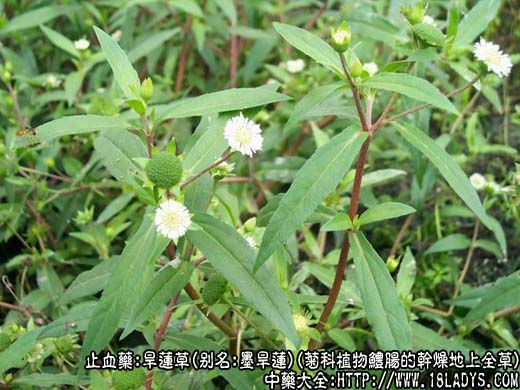
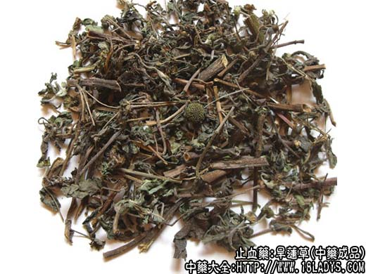
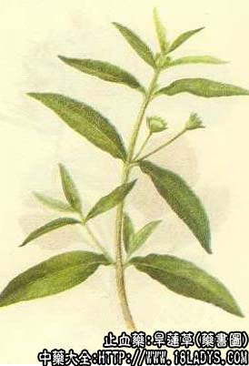

本品为常用中药。始载《唐本草》，原名鳢肠。《图经本草》释名旱莲草。商品有墨旱莲和红汉旱莲二种。
墨旱莲
来源：为菊科植物鳢肠的干燥地上全草。野生于田野、路旁、溪边及阴湿地带。
植物形态：一年生草本，高15～60厘米。茎斜立或呈匍匐状、基部分枝，着地部分节上生不定根。茎有棱，披粗毛。叶对生，近无柄，披针形或椭圆形披针形，长3～10厘米，宽5～25毫米，全缘或具疏齿，先端渐尖，两面披粗毛。头状花序顶生或腋生，直径约5毫米。总苞钟状，苞片绿色，花杂性，外围1～2层为舌状花，白色，雌性，发育或不发育，中心为管状花，淡绿色，两性，发育。舌状花发育的瘦果三棱形，管状发育的瘦果扁四棱形。
产地：主产于湖北、江苏、湖南、河北等地，其他各地已有分布。
性状鉴别：茎圆柱形，有纵棱，表面绿棕色，披白色短毛，有节，节上具对生叶，叶腋间有小枝，茎顶端有头状花序。质脆易断，断面中心有白色疏松的髓。叶多皱缩或破碎，灰绿色或墨绿色，两面均披白色短毛，完整的叶片呈椭圆状披针形或披针形，全缘或具细小疏锯齿。头状花序似菊花，多已结实，果实众多，呈黑色颗粒状。水浸后搓其茎叶，则呈黑色。气微弱，味淡。
以黑绿色，茎长，带叶者为佳。
主要成分：含鳢肠素，苦味质、鞣质、维生素A类物质。
药理作用：止血、凉血，可能有收敛、消炎作用，略带补性。体外试验对金黄色葡萄球菌有较强的抑菌作用，对福氏痢疾杆菌有一定的抑菌作用。
炮制：切咀、生用。
性味：甘、酸、寒。
归经：入肝、肾经。
功能：补肾益阴，凉血止血，乌发固齿。
主治：吐血、咳血、衄血、便血、尿血、崩漏、牙龈出血、肝肾两亏、腰腿酸软、须发早白等症。外敷可治外伤出血。
临床作用：作为收敛性强壮药用。
主要用于表现有肝肾阴虚、肝火亢盛的出血症，包括吐血、尿血、便血、血痢、子宫出血等，尤以治尿血较常用，一般配车前草、冬葵子等。如为慢性肾炎所致的血尿（包括小便有红细胞），阴虚型的病例配六味地黄丸；阴阳两虚者配菟丝子、破故纸、熟地、白芍、大枣、炙甘草。入为尿道炎所致的血尿，配泽泻、黄柏、透骨消、金丝草。
治吐血常配侧柏叶；治便血、血痢配地榆；治子宫出血配阿胶、艾叶。近年来还试用于治眼底出血，配仙鹤草、白芨、生地、赤芍、栀子炭等，方如宁血汤。
此外，对肝肾阴虚，有腰痛、头晕、须发早白者，也惯用旱莲草，配女贞子等，但效力较缓弱。
用量：6～15g。
处方举例：宁血汤：旱莲草15g、仙鹤草30g、生地15g、栀子炭4.5g、白蒺藜12g、密蒙花12g、赤芍9g、白蔹9g、阿胶9g(溶化)，水煎服，治疗一般眼底出血和眼科手术后出血。
红旱莲
来源：为藤黄科植物黄海棠(金丝桃科植物湖南连翘)的干燥地上全草，野生于山坡林下或草丛中，亦有栽培。
植物形态：多年生宿根草本，高40～90厘米。茎直立，有四棱。叶对生，宽披针形至卵状披针形，长4～9厘米，宽1.2～3厘米，全缘无毛，有腺点，无柄，基部抱茎。花数朵顶生聚伞花序；花金黄色，直径约3厘米，萼片5，卵形，雄蕊多数，花丝细，连合成5束。蒴果圆锥形，长1.5～2厘米，沿胞间开裂为5瓣，先端具细长宿存之花柱。种子多数。
产地：主产于湖南、江苏的呢各地，其他各地亦有分布。
性状鉴别：茎圆柱形，上部有四棱柱形，长可达90厘米，直径3～5毫米。表面红棕色，具节，节上有对生叶，叶多已碎落，质硬，较难折断，断面中空。茎顶端着圆柱形蒴果，长1～1.5厘米，基部直径8～10毫米，表面红棕色或棕褐色，有5纵棱，先端5裂。质较硬，内有多数种子，种子长椭圆形，长约1毫米，表面黑褐色，气微弱，味微苦涩。
以红棕色，带有叶、果者为佳。
炮制：切咀，生用。
性味：苦、微寒。归经：入心，肝经。
功能：清肝火、凉血、止血。
主治：吐血、咯血、衄血、子宫出血、外伤出血、并治头痛。
注：1、目前全国多数地区使用墨旱莲。有些地区，如东北、安徽、江苏、浙江、天津、上海等地同时使用红旱莲。两者分别药用，各随大夫处方。
2、宁夏、内蒙古等地以蔷薇科植物朝天委陵菜的全草作旱莲草使用，属于地方习销。